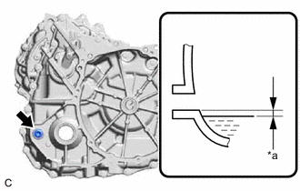

PROCEDURE
REMOVE NO. 1 ENGINE UNDER COVER ASSEMBLY
INSPECT HYBRID TRANSAXLE FLUID

| *a | 0 to 8 mm (0 to 0.315 in.) |
Using a 10 mm hexagon socket wrench, remove the filler plug and gasket from the hybrid vehicle transaxle assembly.
Check that the hybrid transaxle fluid level is between 0 to 8 mm (0 to 0.315 in.) from the bottom lip of the filler plug opening.
Note
When inspecting the hybrid transaxle fluid, make sure that the vehicle is level.
Be sure to directly check that the hybrid transaxle fluid level is within the specified range.
Driving the vehicle with an insufficient or excessive amount of hybrid transaxle fluid may damage the hybrid vehicle transaxle assembly.
If the hybrid transaxle fluid was replaced or if hybrid transaxle fluid was added, make sure to recheck the hybrid transaxle fluid level after driving the vehicle.
Check for leaks if the hybrid transaxle fluid level is low. (If there are no hybrid transaxle fluid leaks but the hybrid transaxle fluid level is low, add hybrid transaxle fluid.)
Using a 10 mm hexagon socket wrench, install the filler plug and a new gasket to the hybrid vehicle transaxle assembly.
INSPECT FOR HYBRID TRANSAXLE FLUID LEAK
INSTALL NO. 1 ENGINE UNDER COVER ASSEMBLY